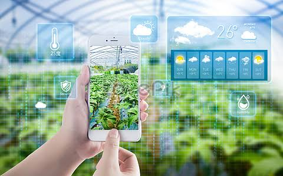

Modern Technology in Agriculture
Agriculture has been there since the development of humankind as a species has started. From the time people started realizing that they can grow food in the soil, they have been trying things. Different crops, seeds, cultivation methods, and finally, incorporating technology to make everything easier. Instead of manually plowing acres of land with the limited power of a human, a tractor can make it easier like never before. The results from hundreds of human hours can be achieved within a few hours on a tractor.
It is just an example of how modern technology has enhanced the production of food and the effectiveness of agriculture. From the cultivation of the seeds to storing them under appropriate conditions, everything is done using precise measurements and knowledge achieved from in-depth researches conducted with the help of technology. Controlling pests and making the food items grow faster saving a ton of time made everything much more effective.
Scientists are even producing hybrids of plans adapting the good factors of different species, resulting in a much better form. Not talking about the budding and crafting we all learned in the schools. But there is much more going on. None of these would be possible if we didn’t have the help of highly capable computers and tons of technological resources around us. So, modern technology definitely has a huge impact on agriculture.
Agriculture Technology: Definition, Examples, and Application
The advancements in agricultural technology are among the key factors for our survival as a species. According to an Agriculture 4.0 – The Future Of Farming Technology 2018 report, 8% of the world’s population (estimated 650 million people) will stay undernourished by 2030. Moreover, the 2018 global GDP of agriculture was between 3% and 4%, which is a drop from a steady 9%-10% in recent decades. The final indicator that we need faster, more efficient technological improvements is the sheer demand. The same report estimates we must produce 70% more food by 2050. With that said, let’s take a deeper look into agriculture technology.
What is agriculture technology?
Agriculture technology or agrotechnology refers to the use of technology in agriculture, aquaculture, and horticulture. Moreover, it’s directly affected by technological developments in agronomy, agricultural science, and agricultural engineering. And, although we, as mankind, went through 4 agricultural revolutions between approximately 10,000 BC and the 19th century, none made such as large impact as the Third Agricultural Revolution or the Green Revolution (the 1950s and later).
Examples of agriculture technology
The following are some things that represent newer agriculture technology:
Satellite imagery
The technical limitations of satellite imagery from the early 1970s, resolution, and frequency, don’t exist anymore. We now have access to real-time data and large area coverage, which means we can seamlessly integrate satellite photography data into other technologies. These include robotics, remote sensing, machine learning, the Internet of Things (IoT), sensors, weather prediction, and more. As such, we can provide data analytics for various purposes, from small-scale farmers to crop insurance personnel, corporations, and government agencies. The image can also be modified to include spatial, temporal, and spectral range, or to build composite maps.
Vertical and urban farming
Vertical farming is sustainable and requires less space since layers can be stacked vertically, and is thus often combined with urban farming. Moreover, it utilizes optimized soil, aeroponic and hydroponic methods for growing. This allows for superb results in imperfect or what would be inadequate environments. Additionally, crops are not only shielded from seasonal changes and extreme weather, but often micro-managed via dedicated climate control and energy-efficient ultraviolet LED lighting. Vertical farming, compared to a regular one, uses between 70% and 95% less water, fewer types and quantities of fertilizers and supplements, and no pesticides. Some crops show a productivity increase of between 350 and 390 times compared to regular growing at the same acreage.
Aircraft and drone technology
We’ve used agricultural aircraft since the 1920s to disperse fertilizers or pesticides. At a later date, hydroseeding, a technique of dispersing seeds and mulch, gained popularity. In all 3 cases, they perform aerial application, e.g., crop dusting, over large areas in a short time. In contrast, drones have better precision, a cheaper cost of maintenance, and provide cheaper and easier operation. Research also shows they’re 5 times faster at aerial spraying than traditional machinery. Also, they’re ideal for analyzing fields and soil, generating 3D maps, and identifying dry spots and potential improvements. Furthermore, drones can continuously monitor crop health and growth process, create time-series animations, notice changes in plants, and raise alarm if the disease appears. Finally, research suggests the use of drones shrinks the cost by 80-85% compared to
How Technology is Integrated in Agriculture
You will be amazed if you look at the progress technology has brought into the agricultural sector. It has been a blessing for farmers across the world. It has not just helped farmers to make better agricultural decisions but has also provided them with tools to carry out agricultural activities easily. Farmers can save more resources and time now using technology. They are grateful for the technology that has made them more self-sufficient. They can now make informed decisions and prioritize the quality of the food they produce.
Modern Technology for Enhancing Agricultural Productivity
Before starting with the topic, I would like to highlight the need for using Modern Technology in the Agricultural sector. Our population is growing, this means that we would need more food to feed them. Here’s where modern technology comes into the picture. We need smart work here along with hard work. So, Modern technology helps to produce quality food in large quantities and reduce wastage. To feed our current and future generations we need to enhance agricultural productivity using modern technology.

How Technology Started

Modern Technology and Social Life

Modern Technology in Agriculture

Modern Technology in Medicine
Cracked-Concrete
Entertainment-Technology-Variant
How-Technology-Affects-the-Society
How-Technology-Can-Help-to-Save-the-Environment
How-Technology-Destroyed-Human-Interaction
How-Technology-is-Impacting-the-Job-Market
Machines
Modern-Technology-and-Younger-Generation